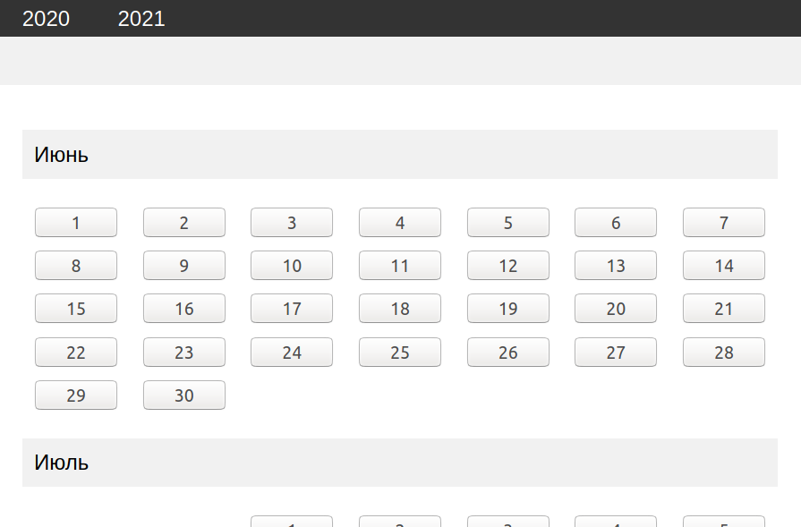

Магазин виртуальной реальности
Учебный проект интернет магазина оборудования для виртуальной реальности. С него всё начиналось
DIARY
В процессе
Дневник приёма лекарств
Помогает отслеживать сложные курсы препаратов
Created by me - Vitaly Makarov. It helps me practice web development and related skills.
Виталий Макаров — это я, мне 32 года, живу в Москве, работаю инженером по обслуживанию лабораторного оборудования.
Сюда меня привело увлечение веб-разработкой. Могу назвать это своим хобби, хотя начиналось всё со вполне определённого желания сменить профессию. В 2016 году, работая на производстве реагентов для водоочистки, я стал искать возможности для своего развития в иной отрасли — создание сайтов. Были всевозможные вебинары, уроки на youtube, задачки на htmlacademy, тематические книги. Затем я понял что нужен более ответственный формат обучения, и приобрёл пакет курсов от компании Geekbrains, выбрав для себя направление фронтенд. В течение следующего года я практиковал HTML и CSS. Затем моя трудовая карьера привела меня в сервисную службу крупного дистрибьютора промышленного и лабораторного оборудования. Погружение в специфику новой для меня деятельности, частые командировки, ненормированный график — всё это стало причиной того, что мой фокус сместился с веб-разработки, и почти на 4 года мне пришлось эту область оставить. И вот сейчас 2020 год, мой ритм жизни немного стабилизировался, командировоки в прошлом, свободного времени больше — и я решил вернуться к тому, на чем остановился. Сейчас это проще и в том смысле, что для меня фронтенд теперь — просто увлечение. Я пересмотрел свои жизненные ориентиры, добился определённых успехов в карьере в инженерной отрасли, и не испытываю необходимости как можно скорее освоить весь доступный стэк во что бы то ни стало. Теперь я в свободное время осваиваю JavaScript, есть идея органайзера-напоминалки, с функционалом именно под себя, так как не смог найти тот, что меня полностью бы устраивал. А здесь просто собираю всё, что делаю, пусть будет :)
Учебный проект интернет магазина оборудования для виртуальной реальности. С него всё начиналось
Дневник приёма лекарств
Помогает отслеживать сложные курсы препаратов